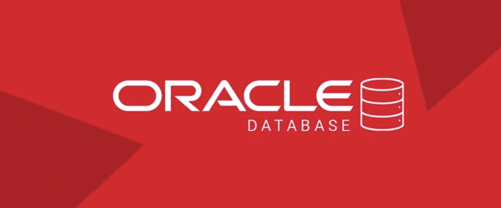
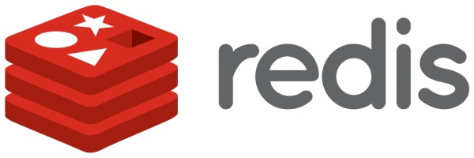
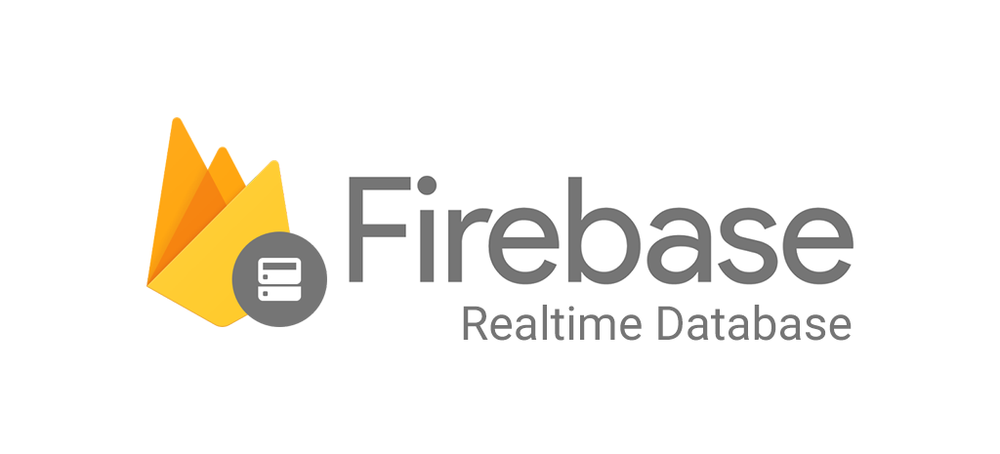
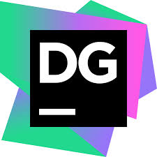
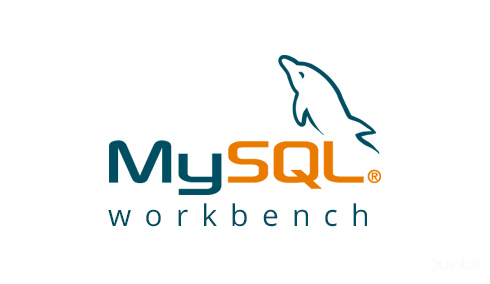
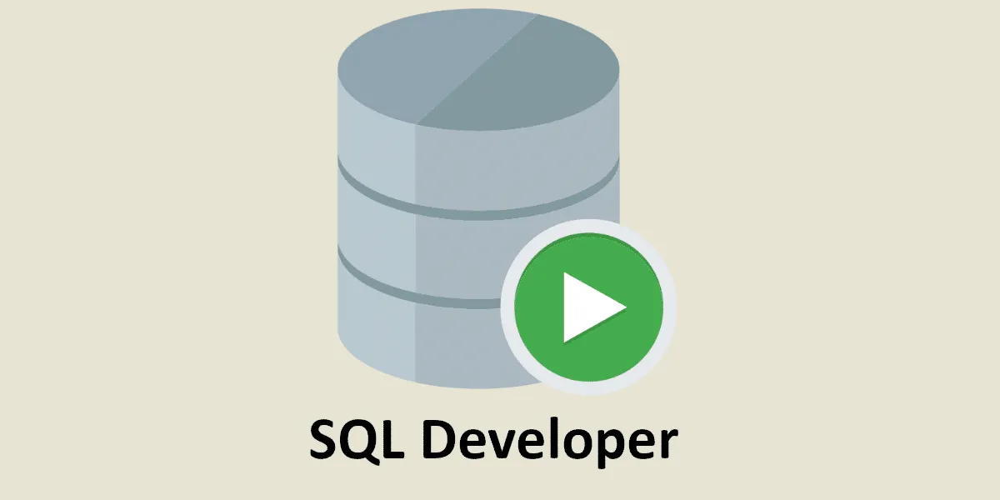
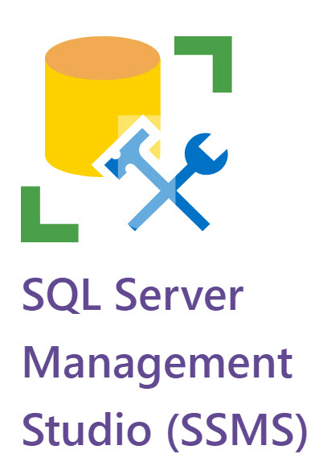
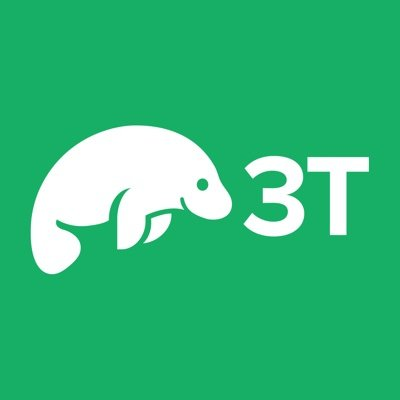

1 Database là gì?
Database (Cơ sở dữ liệu): là một tập hợp dữ liệu
có tổ chức, được lưu trữ trên máy tính để có thể truy cập, quản lý,
cập nhật và khai thác một cách hiệu quả. Nói đơn giản, database
giống như một "kho lưu trữ thông tin" của hệ thống.
Thay vì lưu dữ liệu rời rạc trong các file, dữ liệu được tổ chức
theo cấu trúc giúp việc tìm kiếm và xử lý nhanh chóng hơn.
Ví dụ Một hệ thống bán giày có thể lưu trữ:
- - Thông tin sản phẩm
- - Thông tin khách hàng
- - Đơn hàng
- - Hóa đơn
- - Thông tin nhân viên
Tất cả dữ liệu này được lưu trong database thay vì lưu trong nhiều file Excel riêng lẻ.
Mô hình MVC và Database
Tại sao cần Database?
- Lưu trữ dữ liệu lâu dài (không mất khi tắt server)
- Quản lý dữ liệu lớn một cách hiệu quả
- Hỗ trợ nhiều người dùng truy cập cùng lúc
- Dễ dàng tìm kiếm, sắp xếp và phân tích dữ liệu
- Đảm bảo tính toàn vẹn và an ninh dữ liệu
2 Các loại Database phổ biến
1. Relational Database (RDBMS - Relational Database Management System)
RDBMS (Hệ quản trị cơ sở dữ liệu quan hệ) là loại cơ sở dữ liệu
phổ biến nhất hiện nay. Dữ liệu được tổ chức dưới dạng các bảng
(Table), trong đó mỗi bảng chứa nhiều hàng (Row) và cột (Column).
Các bảng có thể liên kết với nhau thông qua khóa chính (Primary
Key) và khóa ngoại (Foreign Key), giúp đảm bảo tính nhất quán và
tránh trùng lặp dữ liệu.
Các hệ quản trị cơ sở dữ liệu quan hệ sử dụng ngôn ngữ SQL (Structured Query Language) để thực hiện các thao tác như thêm, sửa, xóa và truy vấn dữ liệu.
Ví dụ thực tế: Hệ thống bán hàng
Bảng KhachHang
| MaKH | TenKH |
|---|---|
| 1 | Nguyễn Văn A |
Bảng DonHang
| MaDH | MaKH | TongTien |
|---|---|---|
| 101 | 1 | 500.000đ |
Trong ví dụ trên, cột MaKH trong bảng DonHang là khóa ngoại (Foreign Key) liên kết với cột MaKH trong bảng KhachHang.
- Ưu điểm: Dữ liệu có cấu trúc rõ ràng, đảm bảo tính toàn vẹn dữ liệu, hỗ trợ giao dịch (Transaction), dễ quản lý và bảo trì.
- Nhược điểm: Khó mở rộng ngang (Horizontal Scaling) khi dữ liệu quá lớn và cấu trúc dữ liệu thay đổi thường xuyên.
- Hệ quản trị phổ biến: MySQL, PostgreSQL, MariaDB, SQL Server, Oracle Database.
- Ngôn ngữ truy vấn: SQL (Structured Query Language).
- Ứng dụng: Website bán hàng, hệ thống quản lý sinh viên, ngân hàng, quản lý nhân sự, thương mại điện tử, CRM và hầu hết các ứng dụng web truyền thống.
Một số hệ quản trị cơ sở dữ liệu quan hệ (RDBMS) phổ biến
Hiện nay có nhiều hệ quản trị cơ sở dữ liệu quan hệ (RDBMS) phổ biến. Mỗi hệ quản trị có những ưu điểm, nhược điểm và mục đích sử dụng khác nhau.
| Tiêu chí | MySQL | PostgreSQL | MariaDB | SQL Server | Oracle Database |
|---|---|---|---|---|---|
| Nhà phát triển | Oracle | PostgreSQL Community | MariaDB Foundation | Microsoft | Oracle |
| Mã nguồn mở | ✔️ | ✔️ | ✔️ | ⚠️ Một phần | ❌ |
| Ngôn ngữ | SQL | SQL + PL/pgSQL | SQL | SQL + T-SQL | SQL + PL/SQL |
| Độ phổ biến | ⭐⭐⭐⭐⭐ | ⭐⭐⭐⭐⭐ | ⭐⭐⭐⭐ | ⭐⭐⭐⭐ | ⭐⭐⭐⭐ |
| Dễ học | ⭐⭐⭐⭐⭐ | ⭐⭐⭐ | ⭐⭐⭐⭐⭐ | ⭐⭐⭐ | ⭐⭐ |
| Hiệu năng | Tốt | Rất tốt | Tốt | Rất tốt | Xuất sắc |
| Chi phí | Miễn phí | Miễn phí | Miễn phí | Có bản miễn phí | Thương mại |
| Phù hợp | PHP, Laravel, WordPress | Hệ thống lớn, dữ liệu phức tạp | Thay thế MySQL | .NET, doanh nghiệp | Ngân hàng, ERP, tài chính |
Khuyến nghị cho người học PHP
- - MySQL: Dễ học nhất, tài liệu phong phú.
- - PostgreSQL: Mạnh mẽ, phù hợp dự án lớn. PostgreSQL tuân thủ chuẩn SQL chặt chẽ rất hữu ích khi xử lý dữ liệu phức tạp. Hỗ trợ nhiều kiểu dữ liệu nâng cao (JSONB, ARRAY, UUID, GEOGRAPHY), Độ tin cậy cao
- - MariaDB: Gần giống MySQL, dễ chuyển đổi.
- - SQL Server: Thường dùng trong hệ sinh thái Microsoft.
- - Oracle Database: Phổ biến trong các doanh nghiệp lớn và ngân hàng. Oracle nổi tiếng về: Transaction, Khả năng phục hồi, Độ ổn định, Bảo mật mạnh



2. NoSQL Database
NoSQL (Not Only SQL) là nhóm cơ sở dữ liệu không sử dụng mô hình bảng quan hệ truyền thống như RDBMS. Thay vào đó, dữ liệu có thể được lưu trữ dưới nhiều dạng khác nhau như Document, Key-Value, Column Family hoặc Graph.
NoSQL được thiết kế để xử lý lượng dữ liệu rất lớn, có khả năng mở rộng dễ dàng trên nhiều máy chủ và phù hợp với những hệ thống có cấu trúc dữ liệu thay đổi thường xuyên.
Ví dụ thực tế: Thông tin người dùng trong MongoDB
{
"_id": 1,
"name": "Nguyen Van A",
"email": "vana@gmail.com",
"skills": ["PHP", "Laravel", "MySQL"],
"address": {
"city": "Ha Noi",
"district": "Cau Giay"
}
}
Khác với RDBMS phải định nghĩa cột trước, MongoDB cho phép mỗi document có cấu trúc khác nhau. Điều này giúp việc lưu trữ dữ liệu linh hoạt hơn.
Các loại NoSQL phổ biến
- Document Database: Lưu dữ liệu dưới dạng document JSON/BSON. Ví dụ: MongoDB, Firebase Firestore.
- Key-Value Database: Lưu dữ liệu theo cặp key-value. Ví dụ: Redis.
- Column Family Database: Tối ưu cho dữ liệu khổng lồ và phân tán. Ví dụ: Cassandra.
- Graph Database: Chuyên lưu trữ các mối quan hệ phức tạp. Ví dụ: Neo4j.
- Ưu điểm: Linh hoạt về cấu trúc dữ liệu, dễ mở rộng ngang (Horizontal Scaling), xử lý dữ liệu lớn hiệu quả và phù hợp với các hệ thống phân tán.
- Nhược điểm: Không mạnh về các mối quan hệ dữ liệu phức tạp như RDBMS, một số hệ thống không hỗ trợ đầy đủ ACID Transaction.
- Hệ quản trị phổ biến: MongoDB, Firebase Firestore, Redis, Cassandra, Neo4j.
- Ngôn ngữ truy vấn: Tùy từng hệ quản trị, không nhất thiết phải dùng SQL.
- Ứng dụng: Mạng xã hội, hệ thống chat thời gian thực, game online, IoT, Big Data, AI, Machine Learning và các hệ thống có lượng truy cập rất lớn hoặc các hệ thống có dữ liệu thay đổi liên tục.
Một số hệ quản trị NoSQL phổ biến
NoSQL không phải là một loại cơ sở dữ liệu duy nhất mà là một nhóm các hệ quản trị dữ liệu được thiết kế cho những mục đích khác nhau. Dưới đây là một số NoSQL phổ biến hiện nay.
| Tiêu chí | MongoDB | Redis | Firebase | Cassandra |
|---|---|---|---|---|
| Loại NoSQL | Document Database | Key-Value Database | Document Database | Column Family Database |
| Cách lưu dữ liệu | JSON / BSON Document | Key → Value | JSON Document | Cột phân tán |
| Tốc độ đọc/ghi | Nhanh | Rất nhanh | Nhanh | Rất nhanh |
| Khả năng mở rộng | Tốt | Tốt | Tự động | Rất mạnh |
| Điểm mạnh | Linh hoạt, dễ sử dụng | Hiệu năng cực cao | Realtime Database | Big Data, phân tán |
| Ứng dụng phổ biến | Mạng xã hội, CMS, E-commerce | Cache, Chat, Game Online | Mobile App, Chat Realtime | IoT, Big Data |
| Độ khó học | ⭐⭐ | ⭐⭐ | ⭐ | ⭐⭐⭐⭐ |
| Nên dùng khi | Cần dữ liệu linh hoạt | Cần tốc độ cực cao | Muốn triển khai nhanh | Dữ liệu cực lớn, nhiều server |
Gợi ý lựa chọn
- MongoDB: NoSQL phổ biến nhất, phù hợp để học và xây dựng ứng dụng web.
- Redis: Thường dùng làm Cache, Session Storage, Chat Realtime và Game Online.
- Firebase: Phù hợp cho ứng dụng Mobile và Web Realtime, không cần quản lý server.
- Cassandra: Dành cho hệ thống Big Data, IoT hoặc các hệ thống phân tán quy mô rất lớn.


3 Tiêu chí lựa chọn Database phù hợp
Không có cơ sở dữ liệu nào là tốt nhất cho mọi trường hợp. Việc lựa chọn Database phụ thuộc vào yêu cầu của hệ thống, quy mô dữ liệu, hiệu năng và khả năng mở rộng trong tương lai.
1. Cấu trúc dữ liệu
Nếu dữ liệu có cấu trúc rõ ràng, nhiều mối quan hệ giữa các bảng (Sinh viên, Đơn hàng, Hóa đơn, Khách hàng...), RDBMS là lựa chọn phù hợp. Nếu dữ liệu thay đổi thường xuyên hoặc không đồng nhất, NoSQL sẽ linh hoạt hơn.
2. Mối quan hệ giữa dữ liệu
Hệ thống cần nhiều JOIN, khóa chính, khóa ngoại và đảm bảo tính toàn vẹn dữ liệu nên sử dụng RDBMS. Ngược lại, nếu dữ liệu ít phụ thuộc lẫn nhau, NoSQL có thể mang lại hiệu năng tốt hơn.
3. Khối lượng dữ liệu
Với các ứng dụng quản lý thông thường, RDBMS hoàn toàn đáp ứng tốt. Nếu hệ thống phải lưu trữ hàng tỷ bản ghi hoặc dữ liệu tăng trưởng rất nhanh, cần cân nhắc các giải pháp NoSQL như MongoDB hoặc Cassandra.
4. Hiệu năng đọc và ghi dữ liệu
Một số hệ thống cần xử lý hàng trăm nghìn hoặc hàng triệu thao tác mỗi giây như Chat Realtime, Game Online, IoT hoặc Cache sẽ phù hợp với Redis hoặc các NoSQL chuyên biệt. Trong khi đó, các hệ thống nghiệp vụ thường ưu tiên tính chính xác dữ liệu hơn tốc độ tuyệt đối.
5. Khả năng mở rộng
Nếu dự án dự kiến tăng trưởng mạnh trong tương lai, cần xem xét khả năng mở rộng của Database. PostgreSQL, MongoDB, Cassandra và Oracle đều hỗ trợ mở rộng tốt nhưng theo những cách khác nhau.
6. Chi phí triển khai
MySQL, PostgreSQL, MariaDB và MongoDB Community có thể sử dụng miễn phí. Trong khi đó SQL Server Enterprise hoặc Oracle Database có thể phát sinh chi phí bản quyền đáng kể đối với doanh nghiệp.
7. Kinh nghiệm của đội ngũ phát triển
Một Database mạnh nhưng khó vận hành có thể làm tăng chi phí phát triển. Vì vậy cần cân nhắc trình độ của đội ngũ kỹ thuật trước khi lựa chọn công nghệ.
| Loại hệ thống | Database phù hợp |
|---|---|
| Website bán hàng, quản lý sinh viên, CRM | MySQL, PostgreSQL, SQL Server |
| Hệ thống doanh nghiệp lớn, ERP, ngân hàng | Oracle Database, PostgreSQL |
| Mạng xã hội, CMS, ứng dụng Web hiện đại | MongoDB |
| Cache, Session, Chat Realtime, Game Online | Redis |
| IoT, Big Data, Telemetry | Cassandra |
Kết luận
Trong thực tế, nhiều hệ thống sử dụng kết hợp nhiều loại Database cùng lúc. Ví dụ một website Laravel có thể sử dụng MySQL để lưu dữ liệu nghiệp vụ, Redis để cache và lưu session, đồng thời MongoDB để lưu log hoặc dữ liệu phi cấu trúc. Vì vậy việc lựa chọn Database cần dựa trên bài toán thực tế thay vì chỉ dựa vào độ phổ biến của công nghệ.
Các công cụ quản lý và truy cập Database
Để làm việc với cơ sở dữ liệu, lập trình viên thường sử dụng các công cụ quản trị (Database Management Tools) giúp tạo Database, tạo bảng, thực hiện truy vấn SQL, sao lưu dữ liệu và quản lý người dùng một cách trực quan thay vì phải thao tác hoàn toàn bằng dòng lệnh.
| Database | Công cụ phổ biến | Đặc điểm |
|---|---|---|
| MySQL | phpMyAdmin, MySQL Workbench, DBeaver | Dễ sử dụng, phổ biến trong các dự án PHP và Laravel. |
| MariaDB | phpMyAdmin, DBeaver, HeidiSQL | Tương thích cao với MySQL nên có thể sử dụng chung nhiều công cụ. |
| PostgreSQL | pgAdmin, DBeaver, DataGrip | Hỗ trợ tốt cho các tính năng SQL nâng cao và dữ liệu phức tạp. |
| SQL Server | SQL Server Management Studio (SSMS), Azure Data Studio, DBeaver | Tích hợp tốt với hệ sinh thái Microsoft. |
| Oracle Database | Oracle SQL Developer, DBeaver, TOAD | Thường được sử dụng trong doanh nghiệp lớn và hệ thống ngân hàng. |
| MongoDB | MongoDB Compass, Studio 3T | Hỗ trợ thao tác trực tiếp với dữ liệu dạng Document (JSON). |
| Redis | Redis Insight | Chuyên quản lý dữ liệu dạng Key-Value và Cache. |
Công cụ đa nền tảng phổ biến
- ⭐ DBeaver: Hỗ trợ gần như tất cả các hệ quản trị cơ sở dữ liệu phổ biến hiện nay.
- ⭐ DataGrip: Công cụ quản lý Database chuyên nghiệp của JetBrains.
- ⭐ TablePlus: Giao diện đẹp, nhẹ và được nhiều lập trình viên macOS yêu thích.
- ⭐ phpMyAdmin: Công cụ quản lý MySQL/MariaDB thông qua trình duyệt web.
Azure Data Studio

DataGrip
DBeaver
HeidiSQL
MongoDB Compass

MySQL Workbench

Oracle SQL Developer
pgAdmin
phpMyAdmin
Redis Insight

SSMS

Studio 3T
TOAD
4 Giới thiệu SQL (Structured Query Language)
SQL (Structured Query Language - Ngôn ngữ truy vấn có cấu trúc) là ngôn ngữ tiêu chuẩn được sử dụng để làm việc với các hệ quản trị cơ sở dữ liệu quan hệ (RDBMS) như MySQL, PostgreSQL, MariaDB, SQL Server và Oracle Database.
SQL cho phép người dùng tạo cơ sở dữ liệu, tạo bảng, thêm dữ liệu, chỉnh sửa dữ liệu, xóa dữ liệu và truy vấn thông tin từ Database. Đây là một trong những kỹ năng quan trọng nhất đối với lập trình viên Backend, Data Analyst, Data Engineer và Database Administrator (DBA).
SQL được sử dụng để làm gì?
- - Tạo và quản lý Database.
- - Tạo, sửa đổi và xóa bảng dữ liệu.
- - Thêm dữ liệu vào bảng.
- - Cập nhật dữ liệu hiện có.
- - Xóa dữ liệu khỏi bảng.
- - Tìm kiếm, lọc và thống kê dữ liệu.
- - Quản lý quyền truy cập của người dùng.
Ví dụ truy vấn SQL đơn giản
SELECT * FROM SinhVien WHERE Tuoi >= 18;
Câu lệnh trên dùng để lấy danh sách tất cả sinh viên có tuổi từ 18 trở lên.
| Nhóm lệnh | Chức năng | Ví dụ |
|---|---|---|
| DDL | Định nghĩa cấu trúc Database | CREATE, ALTER, DROP |
| DML | Thao tác dữ liệu | INSERT, UPDATE, DELETE |
| DQL | Truy vấn dữ liệu | SELECT |
| DCL | Quản lý quyền truy cập | GRANT, REVOKE |
| TCL | Quản lý Transaction | COMMIT, ROLLBACK |
Lưu ý
Mặc dù mỗi hệ quản trị cơ sở dữ liệu có thể bổ sung các tính năng riêng (ví dụ: PL/SQL của Oracle, T-SQL của SQL Server hay PL/pgSQL của PostgreSQL), nhưng các câu lệnh SQL cơ bản như SELECT, INSERT, UPDATE, DELETE, JOIN, GROUP BY và ORDER BY đều gần như giống nhau trên hầu hết các RDBMS hiện nay.
Bài tập thực hành: Thiết kế Database Quản lý Sinh viên
Yêu cầu
Một trung tâm đào tạo cần xây dựng hệ thống quản lý sinh viên và lớp học. Mỗi sinh viên có thể tham gia một lớp học và mỗi lớp học có nhiều sinh viên.
Chức năng cần quản lý
- Thông tin lớp học.
- Thông tin sinh viên.
- Danh sách sinh viên thuộc từng lớp.
Yêu cầu thiết kế Database
- Tạo Database tên QuanLySinhVien.
- Tạo bảng LopHoc.
- Tạo bảng SinhVien.
- Thiết lập khóa chính (Primary Key).
- Thiết lập khóa ngoại (Foreign Key).
- Nhập dữ liệu mẫu.
Cấu trúc dữ liệu
| Bảng | Tên cột | Kiểu dữ liệu |
|---|---|---|
| LopHoc | MaLop | INT (PK) |
| TenLop | VARCHAR(100) | |
| ChuyenNganh | VARCHAR(100) | |
| SinhVien | MaSV | INT (PK) |
| HoTen | VARCHAR(100) | |
| NgaySinh | DATE | |
| VARCHAR(100) | ||
| MaLop | INT (FK) |
Câu hỏi thực hành
- Viết lệnh CREATE DATABASE.
- Viết lệnh CREATE TABLE cho hai bảng.
- Thêm ít nhất 3 lớp học.
- Thêm ít nhất 10 sinh viên.
- Hiển thị danh sách sinh viên.
- Hiển thị danh sách sinh viên kèm tên lớp.
- Tìm các sinh viên thuộc lớp "CNTT".
- Đếm số lượng sinh viên của mỗi lớp.